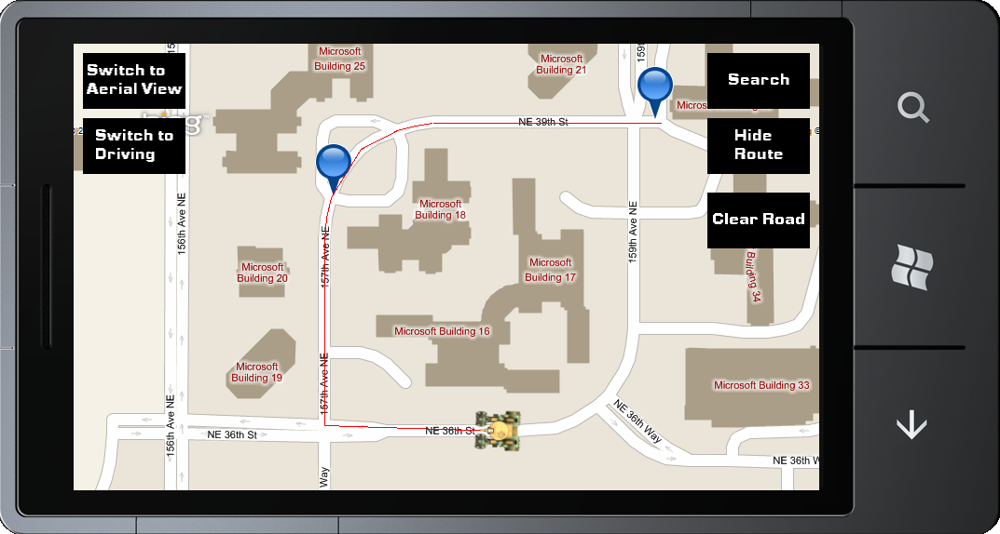

Bing Maps for Games with Pathfinding
Bing Maps Pathfinding Sample
This sample expands on the Bing Maps sample capabilities by combining the Pathfinding sample to allow the tank to drive to markers around the screen using the streets on the map. The sample presents a navigable map of the world by accessing the Bing Maps
REST services. The sample also allows you to switch between street and aerial view, add and remove markers, switch between walking and driving navigation, and switch the visible location.
NOTE: This sample requires a Bing Maps Pathfinding key to run. The register and obtain a key, visit
http://code.msdn.microsoft.com/Bing-Maps-for-Games-with-bedba16c/https://www.bingmapsportal.com/
 |
 |
Overview
The game allows switching between aerial and road views and between walking and driving navigation modes by using buttons on the top left. A button on the screen’s top-right allows displaying the calculated routes which the tank follows. The user can also drag the tank around the display to reposition it or use the device’s search button to focus on a different part of the world.
The game allows switching between aerial and road views and between walking and driving navigation modes by using buttons on the top left. A button on the screen’s top-right allows displaying the calculated routes which the tank follows. The user can also drag the tank around the display to reposition it or use the device’s search button to focus on a different part of the world.
The main challenge presented in this sample is using the on-screen push-pins as input for the Bing Maps routing service. This is because we are working with three different sets of coordinates:
- Screen coordinates – These correspond to the device’s display and range from (0,0) to (800, 480).
- Map pixel coordinates – The map displayed by the game is only a fraction of a much larger map. In the sample’s initial state, the zoom level displayed corresponds to a map which is a square of 33,554,432 pixels. Any position can be described using a pixel coordinate on the entire map.
- World Geodetic System (WGS) coordinates – A standard coordinate system which describes positions on the globe using longitude and latitude.
The challenge lies in the fact that we must convert screen coordinates, which the user supplies when tapping on the display, to WGS coordinates which the Bing Maps rouging service needs to supply routing information.
This is achieved by knowing which WGS coordinate corresponds to the center of the map displayed in the game. It is relatively simple to convert WGS coordinates to map pixel coordinates, and these use the same units as screen coordinates (pixels). To translate a screen coordinate to a WGS coordinate, we simply measure its distance from the center of